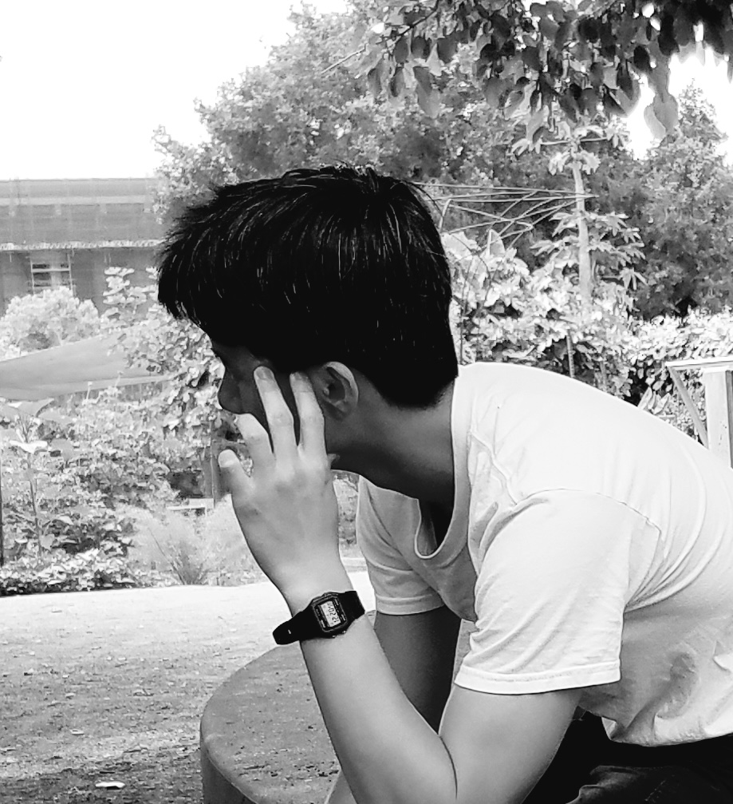

To Hold a Flame
The world ended centuries ago. Now, a new spark is about to ignite a war that could end it again.
Calvin must solve a decades-old mystery of a stolen secret technology, the data for Project Hebe, before war erupts. But as he digs through the secret histories, his own personal secrets are threatened to become uncovered. As the deadline closes and the search more desperate, Calvin begins to realize that in order to redeem his city, he must first redeem himself.
Andrew must survive the wilderness to warn his sister of a potential assassin that threatens to destroy the mission to find the Hebe data. But then he discovers a secret that dwarves even the mystery of the stolen Project Hebe.
As the two boys struggle to solve their own mysteries, an old tragedy hidden in the secret shadows of history binds them together to a fate that neither could ever imagine.

About the Author:
A.C. Chen is a high school student and the author of To Hold a Flame, which—in a shocking twist of time management—is also their debut novel. Written entirely while juggling homework, Chen balances a passion for sci-fi with running, playing piano, and managing the school robotics club—because somebody has to do the boring logistical stuff.
